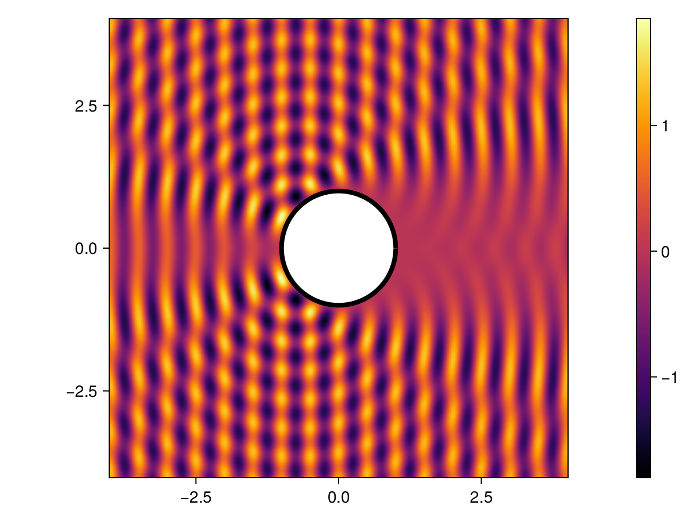

Helmholtz scattering

- Creating a geometry using the Gmsh API
- Assembling integral operators and integral potentials
- Setting up a sound-soft problem in both 2 and 3 spatial dimensions
- Compressing integral operators using
HMatrices.jl - Solving a boundary integral equation
- Exporting the solution to Gmsh for visualization
In this tutorial we will show how to solve an acoustic scattering problem in the context of Helmholtz equation. We will focus on a smooth sound-soft obstacle for simplicity, and introduce along the way the necessary techniques used to handle some difficulties encountered. We will use various packages throughout this example (including of course Inti.jl); if they are not on your environment, you can install them using ] add <package> in the REPL.
In the following section, we will provide a brief mathematical description of the problem (valid in both $2$ and $3$ dimensions). We will tackle the two-dimensional problem first, for which we do not need to worry much about performance issues (e.g. compressing the integral operators, or exporting the solution to Gmsh for visualization). Finally, we present a three-dimensional example, where we will use HMatrices.jl to compress the underlying integral operators.
Sound-soft problem
This example concerns the sound-soft acoustic scattering problem. Mathematically, this means solving an exterior problem governed by Helmholtz equation (time-harmonic acoustics) with a Dirichlet boundary condition. More precisely, letting $\Omega \subset \mathbb{R}^d$ be a bounded domain, and denoting by $\Gamma = \partial \Omega$ its boundary, we wish to solve
\[ \Delta u + k^2 u = 0 \quad \text{on} \quad \mathbb{R}^d \setminus \bar{\Omega},\]
subject to Dirichlet boundary conditions on $\Gamma$
\[ u(\boldsymbol{x}) = g(\boldsymbol{x}) \quad \text{for} \quad \boldsymbol{x} \in \Gamma.\]
and the Sommerfeld radiation condition at infinity
\[ \lim_{|\boldsymbol{x}| \to \infty} \|\boldsymbol{x}|^{(d-1)/2} \left( \frac{\partial u}{\partial |\boldsymbol{x}|} - i k u \right) = 0.\]
Here $g$ is a (given) boundary datum, and $k$ is the constant wavenumber.
For simplicity, we will take $\Gamma$ circle/sphere, and focus on the plane-wave scattering problem. This means we will seek a solution $u$ of the form $u = u_s + u_i$, where $u_i$ is a known incident field, and $u_s$ is the scattered field we wish to compute.
The main reason for focusing on such a simple example is two-folded. First, it alleviates the complexities associated with the mesh generation. Second, since exact solutions are known for this problem (in the form of a series), it is easy to assess the accuracy of the solution obtained. In practice, you can use the same techniques to solve the problem on more complex geometries by providing a .msh file containing the mesh.
Using the theory of boundary integral equations, we can express $u_s$ as
\[ u_s(\boldsymbol{r}) = \mathcal{D}[\sigma](\boldsymbol{r}) - i k \mathcal{S}[\sigma](\boldsymbol{r}),\]
where $\mathcal{S}$ is the so-called single layer potential, $\mathcal{D}$ is the double-layer potential, and $\sigma : \Gamma \to \mathbb{C}$ is a surface density. This is an indirect formulation (because $\sigma$ is an auxiliary density, not necessarily physical) commonly referred to as a combined field formulation. Taking the limit $\mathbb{R}^d \setminus \bar \Omega \ni x \to \Gamma$, it can be shown that the following equation holds on $\Gamma$:
\[ \left( \frac{\mathrm{I}}{2} + \mathrm{D} - i k \mathrm{S} \right)[\sigma] = g,\]
where $\mathrm{I}$ is the identity operator, and $\mathrm{S}$ and $\mathrm{D}$ are the single- and double-layer operators. This is the combined field integral equation that we will solve. The boundary data $g$ is obtained by applying the sound-soft condition $u=0$ on $\Gamma$, from which it readily follows that $u_s = -u_i$ on $\Gamma$.
We are now have the necessary background to solve this problem in both 2 and 3 spatial dimensions. Let's load Inti.jl
using IntiTwo-dimensional scattering
We use Gmsh API for creating .msh file containing the desired geometry and mesh, and then import it into Inti using gmsh_read_msh. Here is a function to mesh the circle:
using Gmsh # this will trigger the loading of Inti's Gmsh extension
function gmsh_circle(;name, meshsize, order=1, radius=1, center = (0,0))
try
gmsh.initialize()
gmsh.model.add("circle-mesh")
gmsh.option.setNumber("Mesh.MeshSizeMax", meshsize)
gmsh.option.setNumber("Mesh.MeshSizeMin", meshsize)
gmsh.model.occ.addDisk(center[1], center[2], 0, radius, radius)
gmsh.model.occ.synchronize()
gmsh.model.mesh.generate(1)
gmsh.model.mesh.setOrder(order)
gmsh.write(name)
finally
gmsh.finalize()
end
endgmsh_circle (generic function with 1 method)Let us now use to create a circle.msh file:
name = joinpath(@__DIR__, "circle.msh")
gmsh_circle(;meshsize=0.1, order = 2, name)Info : Meshing 1D...
Info : Meshing curve 1 (Ellipse)
Info : Done meshing 1D (Wall 0.000149054s, CPU 0.000114s)
Info : 63 nodes 64 elements
Info : Meshing order 2 (curvilinear on)...
Info : [ 0%] Meshing curve 1 order 2
Info : [ 50%] Meshing surface 1 order 2
Info : Done meshing order 2 (Wall 0.000576084s, CPU 0.000576s)
Info : Writing '/home/lfaria/runner-integral-equations/_work/Inti.jl/Inti.jl/docs/build/examples/generated/circle.msh'...
Info : Done writing '/home/lfaria/runner-integral-equations/_work/Inti.jl/Inti.jl/docs/build/examples/generated/circle.msh'We can now import the file and parse the mesh and domain information into Inti.jl using the gmsh_read_msh function:
Ω,msh = Inti.gmsh_read_msh(name; dim=2)
@show ΩDomain with 1 entity:
IntiGmshExt.GmshEntity with (dim,tag)=(2,2)@show mshInti.LagrangeMesh{2, Float64} containing:
63 elements of type Inti.LagrangeElement{Inti.ReferenceHyperCube{1}, 3, StaticArraysCore.SVector{2, Float64}}The code above will parse all entities in the name of dimension 2 as a Domain, and also import the underlying mesh (that, in this case, is projected into two dimensions by ignoring the third component). Note that in the example above, Ω is a two-dimensional domain containing a single GmshEntity which represents the disk. To extract the boundary $\Gamma = \partial \Omega$, we can use the boundary function:
Γ = Inti.boundary(Ω)Domain with 1 entity:
IntiGmshExt.GmshEntity with (dim,tag)=(1,1)In Inti.jl, you can use domain to create a view of a mesh containing only the elements in the domain. For example view(msh,Γ) will return an abstract mesh that you can use to iterate over the elements in the boundary of the disk.
To solve our boundary integral equation usign a Nyström method, we actually need a quadrature of our curve/surface (and possibly the normal vectors at the quadrature nodes). Once a mesh is available, creating a quadrature object can be done via the Quadrature constructor, which requires passing a mesh the domain that one wishes to generate a quadrature for:
Γ = Inti.boundary(Ω)
Q = Inti.Quadrature(msh, Γ; qorder = 4)The object Q now contains a quadrature (of order 4) that can be used to solve a boundary integral equation on Γ. As a sanity check, let's make sure integrating the function x->1 over Q gives an approximation to the perimeter:
Inti.integrate(x->1,Q) - 2π-6.470135645031405e-7With the Quadrature constructed, we now can define discrete approximation to the integral operators $\mathrm{S}$ and $\mathrm{D}$ as follows:
k = 4π
pde = Inti.Helmholtz(;k, dim=2)
G = Inti.SingleLayerKernel(pde)
dGdny = Inti.DoubleLayerKernel(pde)
Sop = Inti.IntegralOperator(G,Q,Q)
Dop = Inti.IntegralOperator(dGdny,Q,Q)315×315 Inti.IntegralOperator{ComplexF64}:
-0.0-0.0im … -0.000677086-1.99024e-6im
-0.000700769-2.69058e-5im -0.000718996-4.33871e-5im
-0.000789816-0.000177498im -0.000802427-0.000214251im
-0.000819864-0.000431649im -0.000815473-0.000481194im
-0.000782099-0.000618282im -0.000763904-0.000670663im
-0.000763175-0.000670023im … -0.000741036-0.000722431im
-0.000658728-0.00085953im -0.000621754-0.000909222im
-0.000377416-0.00112472im -0.000318313-0.00116087im
2.09666e-5-0.00128333im 9.57198e-5-0.00129628im
0.000305534-0.00130541im 0.000385022-0.00130062im
⋮ ⋱
9.57198e-5-0.00129628im 2.09666e-5-0.00128333im
-0.000318313-0.00116087im -0.000377416-0.00112472im
-0.000621754-0.000909222im -0.000658728-0.00085953im
-0.000741036-0.000722431im -0.000763175-0.000670023im
-0.000763904-0.000670663im … -0.000782099-0.000618282im
-0.000815473-0.000481194im -0.000819864-0.000431649im
-0.000802427-0.000214251im -0.000789816-0.000177498im
-0.000718996-4.33871e-5im -0.000700769-2.69058e-5im
-0.000677086-1.99024e-6im -0.0-0.0imBoth Sop and Dop are of type IntegralOperator, which is a subtype of AbstractMatrix. There are two well-known difficulties related to the discretization of these IntegralOperators:
- The kernel of the integral operator is not smooth, and thus specialized
quadrature rules are required to accurately approximate the matrix entries for which the target and source point lie close (relative to some scale) to each other.
- The underlying matrix is dense, and thus the storage and computational cost
of the operator is prohibitive for large problems unless acceleration techniques such as Fast Multipole Methods or Hierarchical Matrices are employed.
Inti.jl tries to provide a modular and transparent interface for dealing with both of these difficulties, where the general approach for solving a BIE will be to first construct a (possible compressed) naive representation of the integral operator where singular and nearly-singular integrals are ignored, followed by a the creation of a (sparse) correction intended to account for such singular interactions.
The first part of this example, being two-dimensional, does not require any compression algorithm, so we will simply represent the operators Sop and Dop as dense matrices:
S_mat = Matrix(Sop)
D_mat = Matrix(Dop)315×315 Matrix{ComplexF64}:
-0.0-0.0im … -0.000677086-1.99024e-6im
-0.000700769-2.69058e-5im -0.000718996-4.33871e-5im
-0.000789816-0.000177498im -0.000802427-0.000214251im
-0.000819864-0.000431649im -0.000815473-0.000481194im
-0.000782099-0.000618282im -0.000763904-0.000670663im
-0.000763175-0.000670023im … -0.000741036-0.000722431im
-0.000658728-0.00085953im -0.000621754-0.000909222im
-0.000377416-0.00112472im -0.000318313-0.00116087im
2.09666e-5-0.00128333im 9.57198e-5-0.00129628im
0.000305534-0.00130541im 0.000385022-0.00130062im
⋮ ⋱
9.57198e-5-0.00129628im 2.09666e-5-0.00128333im
-0.000318313-0.00116087im -0.000377416-0.00112472im
-0.000621754-0.000909222im -0.000658728-0.00085953im
-0.000741036-0.000722431im -0.000763175-0.000670023im
-0.000763904-0.000670663im … -0.000782099-0.000618282im
-0.000815473-0.000481194im -0.000819864-0.000431649im
-0.000802427-0.000214251im -0.000789816-0.000177498im
-0.000718996-4.33871e-5im -0.000700769-2.69058e-5im
-0.000677086-1.99024e-6im -0.0-0.0imAssembling our discrete approximatio to the combined-field operator is now simply a matter of linear algebra:
using LinearAlgebra
L = I/2 + D_mat - im*k*S_mat315×315 Matrix{ComplexF64}:
0.5-0.0im … 0.0256015-0.0486101im
0.0252627-0.0261842im 0.0250376-0.0219459im
0.0232298-0.00842892im 0.022736-0.00650406im
0.0197191+0.00113382im 0.0190164+0.0023525im
0.0169827+0.00524065im 0.0161884+0.00616371im
0.0161892+0.00616435im … 0.0153755+0.00701557im
0.0130947+0.00898138im 0.0122301+0.00958488im
0.00783753+0.0116953im 0.00696029+0.0119445im
0.00271097+0.012413im 0.00190265+0.0123603im
-0.000188998+0.0120005im -0.00091916+0.011791im
⋮ ⋱
0.00190265+0.0123603im 0.00271097+0.012413im
0.00696029+0.0119445im 0.00783753+0.0116953im
0.0122301+0.00958488im 0.0130947+0.00898138im
0.0153755+0.00701557im 0.0161892+0.00616435im
0.0161884+0.00616371im … 0.0169827+0.00524065im
0.0190164+0.0023525im 0.0197191+0.00113382im
0.022736-0.00650406im 0.0232298-0.00842892im
0.0250376-0.0219459im 0.0252627-0.0261842im
0.0256015-0.0486101im 0.5-0.0imwhere I is the identity matrix. Assuming an incident field along the $x_1$ direction of the form $u_i =e^{ikx_1}$, the right-hand side of the equation can be construted using:
uᵢ = x -> exp(im*k*x[1]) # plane-wave incident field
rhs = map(Q) do q
x = q.coords
-uᵢ(x)
end315-element Vector{ComplexF64}:
-0.9999999992656585 + 3.8323400312725004e-5im
-0.9999964647582099 + 0.002659035742951587im
-0.9998779948375077 + 0.015620353380278828im
-0.9992253630323544 + 0.03935319393466633im
-0.9982347259260077 + 0.059392187663262944im
-0.9978530659478186 + 0.0654924329868605im
-0.9958788311536455 + 0.09069373550609117im
-0.9901662593189073 + 0.13989560002516985im
-0.9799538336956448 + 0.19922470686440613im
-0.970592670563311 + 0.24072778786168442im
⋮
-0.9799538336956445 + 0.19922470686440785im
-0.9901662593189069 + 0.13989560002517337im
-0.9958788311536454 + 0.09069373550609294im
-0.9978530659478184 + 0.06549243298686228im
-0.9982347259260075 + 0.05939218766326649im
-0.9992253630323544 + 0.03935319393466811im
-0.9998779948375077 + 0.015620353380282379im
-0.9999964647582099 + 0.002659035742951587im
-0.9999999992656585 + 3.832340031627772e-5imIn computing rhs above, we used map to evaluate the incident field at all quadrature nodes. When iterating over Q, the iterator returns a QuadratureNode, and not simply the coordinate of the quadrature node. This is so that you can access additional information, such as the normal vector, at the quadrature node.
We can now solve the integral equation using e.g. the backslash operator:
σ = L \ rhs315-element Vector{ComplexF64}:
-0.9530905157875147 - 0.14657440475604744im
-1.064133682312321 + 0.06537144865255318im
-1.0916154562168434 + 0.1424084935583501im
-1.0554917292440755 + 0.13691740214409454im
-0.9617829624764864 - 0.04145793191944186im
-0.9622382265788016 - 0.03059874680263776im
-1.0399578455419474 + 0.23474284233198098im
-1.0400627317573878 + 0.37757480414089545im
-0.9944590917374931 + 0.4172638140651602im
-0.9505120642233018 + 0.24450921686150653im
⋮
-0.9944590917374885 + 0.4172638140651654im
-1.0400627317573863 + 0.37757480414089967im
-1.0399578455419494 + 0.23474284233197792im
-0.9622382265787656 - 0.03059874680264324im
-0.9617829624765193 - 0.04145793191943742im
-1.0554917292440817 + 0.13691740214409454im
-1.091615456216854 + 0.14240849355835636im
-1.0641336823123198 + 0.06537144865255354im
-0.9530905157875814 - 0.14657440475604172imThe variable σ contains the value of the approximate density at the quadrature nodes, which can be used to reconstruct the solution using the IntegralPotential:
𝒮 = Inti.IntegralPotential(G,Q)
𝒟 = Inti.IntegralPotential(dGdny,Q)
uₛ = x -> 𝒟[σ](x) - im*k*𝒮[σ](x)#10 (generic function with 1 method)where uₛ is an anonymous/lambda function representing the approximate scattered field.
To assess the accuracy of the solution, we can compare it to the exact solution (obtained by separation of variables in polar coordinates):
using SpecialFunctions # for bessel functions
function circle_helmholtz_soundsoft(pt;radius=1,k,θin)
x = pt[1]
y = pt[2]
r = sqrt(x^2+y^2)
θ = atan(y,x)
u = 0.0
r < radius && return u
c(n) = -exp(im*n*(π/2-θin))*besselj(n,k*radius)/besselh(n,k*radius)
u = c(0)*besselh(0,k*r)
n = 1;
while (abs(c(n)) > 1e-12)
u += c(n)*besselh(n,k*r)*exp(im*n*θ) + c(-n)*besselh(-n,k*r)*exp(-im*n*θ)
n += 1
end
return u
endcircle_helmholtz_soundsoft (generic function with 1 method)Here is the maximum error on some points located on a circle of radius 2:
uₑ = x -> circle_helmholtz_soundsoft(x,k=k,radius=1,θin=0) # exact solution
er = maximum(0:0.01:2π) do θ
R = 2
x = (R*cos(θ),R*sin(θ))
abs(uₛ(x) - uₑ(x))
end
@info "error without correction = $er"[ Info: error without correction = 0.20118660413979525We see that the error is quite large, and somewhat not satisfactory! The main issue here is that the quadrature Q was designed to integrate smooth functions over Γ, and it is not expected to be accurate enough in the presence of singular and nearly-singular kernels (ubiquitous in BIEs). To remedy this, we need to compute a correction for the integral operators $\mathrm{S}$ and $\mathrm{D}$. In this example, we will use the general purpose density interpolation method, implemented in the bdim_correction function, for computing a sparse correction to the integral operators above (see the docstring of the function for more details):
δS, δD = Inti.bdim_correction(pde, Q, Q, S_mat, D_mat)This will construct a sparse matrix δS and δD that can be used to correct S_mat and D_mat. Assembling a corrected version of the combined-field BIE is done through:
L = I/2 + (D_mat + δD) - im*k*(S_mat + δS)We can now solve the linear system again, and assemble a corrected version of the scattered field:
σ = L \ rhs
uₛ = x -> 𝒟[σ](x) - im*k*𝒮[σ](x)#18 (generic function with 1 method)Let us check the error again:
er = maximum(0:0.01:2π) do θ
R = 2
x = (R*cos(θ),R*sin(θ))
abs(uₛ(x) - uₑ(x))
end
@info "error with correction = $er"[ Info: error with correction = 1.5016309869583376e-6As we can see, the error is much smaller! This example was intended to illustrate the importance properly handling the singularities: correcting for the nearly-singular integrals is essential, and should always be done in practice.
To visualize the solution in this simple (2d) example, we could simply use Makie:
using CairoMakie
xx = yy = range(-4,stop=4,length=200)
vals = map(pt-> norm(pt) > 1 ? real(uₛ(pt) + uᵢ(pt)) : NaN, Iterators.product(xx,yy))
fig,ax,hm = heatmap(xx,yy,vals;
colormap=:inferno, interpolate=true,
axis=(aspect=DataAspect(),xgridvisible = false, ygridvisible = false),
)
lines!(ax,[cos(θ) for θ in 0:0.01:2π], [sin(θ) for θ in 0:0.01:2π], color=:black, linewidth=4)
Colorbar(fig[1,2], hm)
fig
More complex problems, however, may require a mesh-based visualization, where we would first need to create a mesh for the places where we want to visualize the solution. In the 3D example that follows, we will use the Gmsh API to create a view (in the sense of Gmsh) of the solution on a punctured plane.
Three-dimensional scattering
We now consider the same problem in 3D, being a bit more terse in the explanation since many of the steps are similar. The main difficulty we will try to address here is related to the computational complexity associated to three-dimensional problems, where one needs to be careful not to assemble and/or factor huge dense matrices! Instead of representing Sop and Dop as dense matrices, and solving the system using \ (which dispatches to to an LU factorization in our case) we will:
- use hierarchical matrices to compress the integral operators
- rely on an iterative solver to solve the linear system
The following function will create a mesh of a sphere using the Gmsh API:
function gmsh_sphere(;name, meshsize, order=1, radius=1, center = (0,0,0))
try
gmsh.initialize()
gmsh.model.add("sphere-mesh")
gmsh.option.setNumber("Mesh.MeshSizeMax", meshsize)
gmsh.option.setNumber("Mesh.MeshSizeMin", meshsize)
gmsh.model.occ.addSphere(center[1], center[2], center[3], radius)
gmsh.model.occ.synchronize()
gmsh.model.mesh.generate(2)
gmsh.model.mesh.setOrder(order)
gmsh.write(name)
finally
gmsh.finalize()
end
endgmsh_sphere (generic function with 1 method)As before, lets write a file with our mesh, and import it into Inti.jl, and create a surface quadrature:
name = joinpath(@__DIR__, "sphere.msh")
gmsh_sphere(;meshsize=0.1, order = 2, name)
Ω,msh = Inti.gmsh_read_msh(name; dim=3)
Γ = Inti.boundary(Ω)
Q = Inti.Quadrature(msh, Γ; qorder = 4)18912-element Inti.Quadrature{3, Float64}:
Inti.QuadratureNode{3, Float64}([-0.05373189629208194, -0.01161698092548756, 0.9984868469648277], 0.00118579869363884, [-0.05361621936255531, -0.011608545081622965, 0.9984941375403034])
Inti.QuadratureNode{3, Float64}([-0.03492074140168075, 0.022170510743492314, 0.9991427196326353], 0.0011855731059084692, [-0.034983469901105964, 0.02212443248555452, 0.9991429659067167])
Inti.QuadratureNode{3, Float64}([-0.031761986002829895, -0.036601557303946465, 0.998823824836464], 0.001185610720355747, [-0.03183434750584738, -0.03656404879293807, 0.998824130993412])
Inti.QuadratureNode{3, Float64}([-0.011026214248489027, -0.002388771564555545, 0.9999355892140249], 0.0005832144771935263, [-0.01109284426595146, -0.0023958947761847133, 0.9999356021736162])
Inti.QuadratureNode{3, Float64}([-0.05121457271448638, -0.07482546995496009, 0.9958790414559278], 0.0005850030694509388, [-0.051291538792827024, -0.074793521145121, 0.995879062558792])
Inti.QuadratureNode{3, Float64}([-0.05800197296119256, 0.051213669467410614, 0.9970003700445476], 0.0005847076127932931, [-0.05806246091508734, 0.05116751192716394, 0.9970008206394153])
Inti.QuadratureNode{3, Float64}([-0.6501988722497838, 0.6489371883647597, -0.39511992062859846], 0.0012162373112223446, [-0.6501943511110959, 0.6489742507633552, -0.39506926940647086])
Inti.QuadratureNode{3, Float64}([-0.6364728535064232, 0.6764184717038679, -0.3706189601325529], 0.0012162993738145708, [-0.6365276209999458, 0.676366601167322, -0.3706221910915678])
Inti.QuadratureNode{3, Float64}([-0.6618619654037546, 0.659614321877928, -0.3561540062979435], 0.0012162773870343711, [-0.6618160784579561, 0.6596348045083624, -0.35620415912190945])
Inti.QuadratureNode{3, Float64}([-0.6472076196112453, 0.6880839892521321, -0.32811759018236186], 0.0005994689219439917, [-0.6472072000678947, 0.6880744991728245, -0.32814070727104694])
⋮
Inti.QuadratureNode{3, Float64}([0.04173204513767651, 0.10352426085097419, -0.9937504616364803], 0.0004546832921112443, [0.04175454058409401, 0.10348630374445132, -0.9937540657918954])
Inti.QuadratureNode{3, Float64}([0.013457244073241838, 0.020212409648456976, -0.9997041927057123], 0.0004558919568156919, [0.013497744923169725, 0.020193131341377655, -0.9997049806460999])
Inti.QuadratureNode{3, Float64}([0.09127625501920729, 0.0963237458107087, -0.9911551197925532], 0.0004552156761508572, [0.09126485161296417, 0.09628825895556206, -0.9911605813627631])
Inti.QuadratureNode{3, Float64}([-0.09472235769872936, 0.0037906541320694154, 0.9954949077430773], 0.0014663761087425574, [-0.09463490026160616, 0.0037351466837836633, 0.9955050398324092])
Inti.QuadratureNode{3, Float64}([-0.06823846640761834, -0.016072900864404965, 0.997538140434608], 0.001466541550028431, [-0.0683714746831031, -0.016085143364338632, 0.9975302549860864])
Inti.QuadratureNode{3, Float64}([-0.09149307527427684, -0.05497852189864191, 0.9942848077678527], 0.001466260669537865, [-0.0914363491248057, -0.05491220586319114, 0.9942957526339761])
Inti.QuadratureNode{3, Float64}([-0.06348859835074336, -0.07859956320952034, 0.9948807402366961], 0.0007228729658631738, [-0.06346743870697612, -0.0785449572276266, 0.9948882218209674])
Inti.QuadratureNode{3, Float64}([-0.12034709149517235, -0.036046165440201866, 0.9920760981846977], 0.0007215587484558297, [-0.12027522845803366, -0.036031213168334845, 0.9920864987978546])
Inti.QuadratureNode{3, Float64}([-0.07030708968947921, 0.04743830129791589, 0.9963949471865234], 0.0007237797303682895, [-0.0702576617687401, 0.04740512889398982, 0.9964018339592383])Writing and reading a mesh to/from disk can be time consuming. You can avoid doing so by using gmsh_import_mesh! and gmsh_import_domain functions on an active gmsh model without writing it to disk.
We can now assemble the integral operators as before, being careful to use dim=3 when defining the Helmholtz PDE:
pde = Inti.Helmholtz(;k, dim=3)
G = Inti.SingleLayerKernel(pde)
dGdny = Inti.DoubleLayerKernel(pde)
Sop = Inti.IntegralOperator(G,Q,Q)
Dop = Inti.IntegralOperator(dGdny,Q,Q)18912×18912 Inti.IntegralOperator{ComplexF64}:
-0.0-0.0im … -0.000587573-6.74426e-5im
-0.00135192-4.54683e-5im -0.000750374-3.49758e-5im
-0.00153089-3.38217e-5im -0.00045524-0.0001418im
-0.00122332-5.75439e-5im -0.000507137-0.000103778im
-0.00094545-0.000117408im -0.00036526-0.000226836im
-0.000948445-0.000116288im … -0.00224481-3.12775e-6im
-0.000545145-0.000234945im -0.000362228-9.00805e-6im
-0.000578174-0.000134575im -0.000357295+6.03064e-5im
-0.000590311-6.27741e-5im -0.000347467+0.000102799im
-0.000590576+6.03707e-5im -0.000316163+0.000177058im
⋮ ⋱
-7.54547e-6+0.000593322im 1.24702e-5+0.000361965im
-2.04192e-5+0.000593019im -5.50286e-6+0.000362136im
-7.49581e-6+0.000593321im … 9.64956e-6+0.00036205im
-0.00123291-5.8635e-5im -0.000678233-4.57882e-5im
-0.00321831-7.32377e-6im -0.00057465-7.20534e-5im
-0.00100932-9.87343e-5im -0.000419692-0.000174512im
-0.000905575-0.00013341im -0.000358114-0.000233578im
-0.000879614-0.00014653im … -0.000440672-0.000155096im
-0.000965673-0.000110842im -0.0-0.0imHere is how much memory it would take to store the dense representation of these matrices:
mem = 2*length(Sop)*16/1e9 # 16 bytes per complex number, 1e9 bytes per GB, two matrices
println("memory required to store Sop and Dop: $(mem) GB")memory required to store Sop and Dop: 11.445239808 GBEven for this simple example, the dense representation of the integral operators as matrix is already quite expensive. We will thus use hierarchical matrix representation to compress things a bit:
import HMatrices
S_hmat = HMatrices.assemble_hmatrix(Sop;atol=1e-6)HMatrix of ComplexF64 with range 1:18912 × 1:18912
number of nodes in tree: 18237
number of leaves: 13678 (4310 admissible + 9368 full)
min rank of sparse blocks : 7
max rank of sparse blocks : 42
min length of dense blocks : 1296
max length of dense blocks : 1369
min number of elements per leaf: 1296
max number of elements per leaf: 1397124
depth of tree: 9
compression ratio: 8.567452
D_hmat = HMatrices.assemble_hmatrix(Dop;atol=1e-6)HMatrix of ComplexF64 with range 1:18912 × 1:18912
number of nodes in tree: 18237
number of leaves: 13678 (4310 admissible + 9368 full)
min rank of sparse blocks : 8
max rank of sparse blocks : 48
min length of dense blocks : 1296
max length of dense blocks : 1369
min number of elements per leaf: 1296
max number of elements per leaf: 1397124
depth of tree: 9
compression ratio: 7.545484
It is worth mentioning that hierchical matrices are not the only way to compress such integral operators, and may in fact not even be the best for the problem at hand. For example, one could use a fast multipole method (FMM), which has a much lighter memory footprint, and is also faster to assemble. The main advantage of hierarchical matrices is that they are purely algebraic, allowing for the use of direct solver. Hierarchical matrices also tend to give a faster matrix-vector product after the (offline) assembly stage.
As in the 2D case, we need to correct S_hmat and D_hmat to account for the singular and nearly-singular integrals. We will again use the density interpolation method here:
δS, δD = Inti.bdim_correction(pde, Q, Q, S_hmat, D_hmat)We will use the generalized minimal residual (GMRES) iterative solver, for the linear system. This requires us to define a linear operator L, approximating the combined-field operator, that supports the matrix-vector product. In what follows we use LinearMaps to lazily assemble L:
using LinearMaps
L = I/2 + (LinearMap(D_hmat) + LinearMap(δD)) - im*k*(LinearMap(S_hmat) + LinearMap(δS))18912×18912 LinearMaps.LinearCombination{ComplexF64} with 4 maps:
18912×18912 LinearMaps.ScaledMap{ComplexF64} with scale: -0.0 - 12.566370614359172im of
18912×18912 LinearMaps.LinearCombination{ComplexF64} with 2 maps:
18912×18912 LinearMaps.WrappedMap{ComplexF64} of
18912×18912 HMatrix{ClusterTree{3, Float64}, ComplexF64}
18912×18912 LinearMaps.WrappedMap{ComplexF64} of
18912×18912 SparseArrays.SparseMatrixCSC{ComplexF64, Int64} with 113472 stored entries
18912×18912 LinearMaps.UniformScalingMap{Float64} with scaling factor: 0.5
18912×18912 LinearMaps.WrappedMap{ComplexF64} of
18912×18912 HMatrix{ClusterTree{3, Float64}, ComplexF64}
18912×18912 LinearMaps.WrappedMap{ComplexF64} of
18912×18912 SparseArrays.SparseMatrixCSC{ComplexF64, Int64} with 113472 stored entriesWe can now solve the linear system using GMRES solver (implemented in IterativeSolvers):
using IterativeSolvers
rhs = map(Q) do q
x = q.coords
-uᵢ(x)
end
σ, hist = gmres(L, rhs; log=true, abstol=1e-6)
@show histConverged after 18 iterations.As before, let us represent the solution using IntegralPotentials:
𝒮 = Inti.IntegralPotential(G,Q)
𝒟 = Inti.IntegralPotential(dGdny,Q)
uₛ = x -> 𝒟[σ](x) - im*k*𝒮[σ](x)#31 (generic function with 1 method)To check the result, we compare against the exact solution obtained through a series:
using GSL
sphbesselj(l,r) = sqrt(π/(2r)) * besselj(l+1/2,r)
sphbesselh(l,r) = sqrt(π/(2r)) * besselh(l+1/2,r)
sphharmonic(l,m,θ,ϕ) = GSL.sf_legendre_sphPlm(l,abs(m),cos(θ))*exp(im*m*ϕ)
function sphere_helmholtz_soundsoft(xobs;radius=1,k=1,θin=0,ϕin=0)
x = xobs[1]
y = xobs[2]
z = xobs[3]
r = sqrt(x^2+y^2+z^2)
θ = acos(z/r)
ϕ = atan(y,x)
u = 0.0
r < radius && return u
c(l,m) = -4π*im^l*sphharmonic(l,-m,θin,ϕin)*sphbesselj(l,k*radius)/sphbesselh(l,k*radius)
l = 0
for l=0:60
for m=-l:l
u += c(l,m)*sphbesselh(l,k*r)*sphharmonic(l,m,θ,ϕ)
end
l += 1
end
return u
endsphere_helmholtz_soundsoft (generic function with 1 method)We will compute the error on some point on the sphere of radius 2:
uₑ = (x) -> sphere_helmholtz_soundsoft(x;radius=1,k=k,θin=π/2,ϕin=0)
er = maximum(1:100) do _
x̂ = rand(Inti.Point3D) |> normalize # an SVector of unit norm
x = 2*x̂
abs(uₛ(x) - uₑ(x))
end
@info "error with correction = $er"[ Info: error with correction = 7.093381941716063e-6We see that the approximation is quite accurate. We can now export the solution to Gmsh for visualization. To do so, we will first create a Gmsh view ...
This page was generated using Literate.jl.